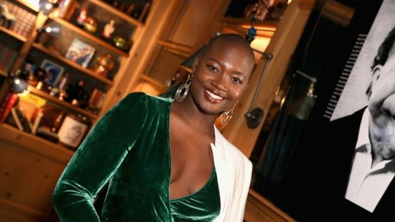
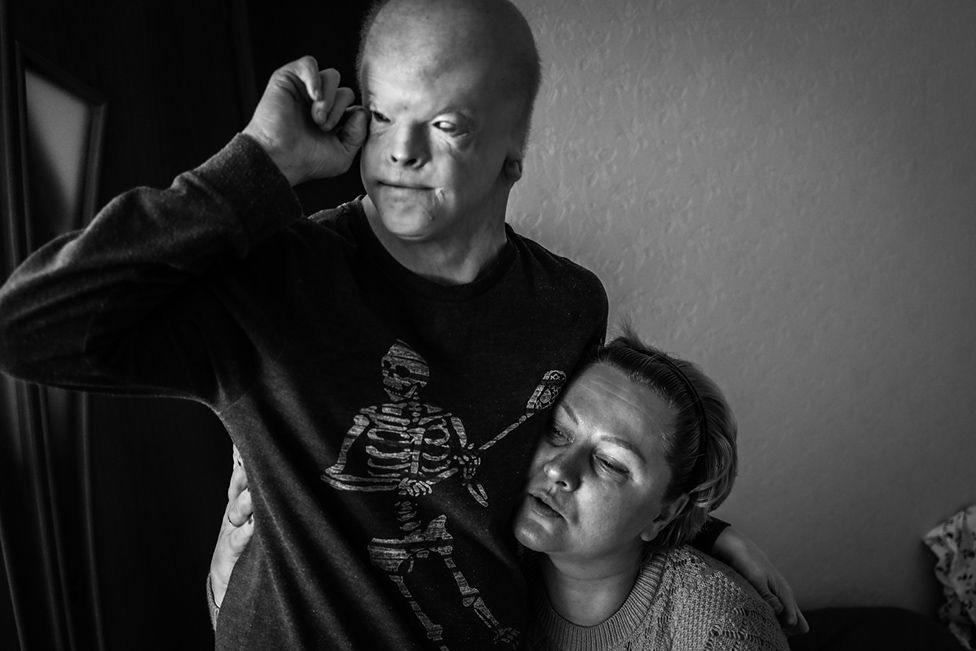

Travel warnings issued as
fires ravage Australia
FireFighters tackle "catastrophic" blazes
in New South Wales as residents are
urged to stay at home.
FireFighters tackle "catastrophic" blazes
in New South Wales as residents are
urged to stay at home.
|  | ||
|---|---|---|
| The man who carried out the stab attack at London Bridge on Friday, named by police as Usman Khan, had previously been jailed for terrorism offences. 2h|UK | The Uk prime minister stresses the commitment to Nato on a visit to
the alliance's mission in Estonia. 3h|UK Politics |
Mama Cax, model and advocate for inclusivity in fashion, dies aged 30 Over the last few years, Cax hit several major fashion milestones. 6h|US & Canada |
 |
 | |||
|---|---|---|---|---|
| The man who changed the face of Christianity in Africa. | The man who helped put Vladimir Putin in the Kremlin. | Bronze Age royal tombs unearthed in Greece. | Teenager with rare disability flourishes in new home. | My strange encounters with a fake heiress. |